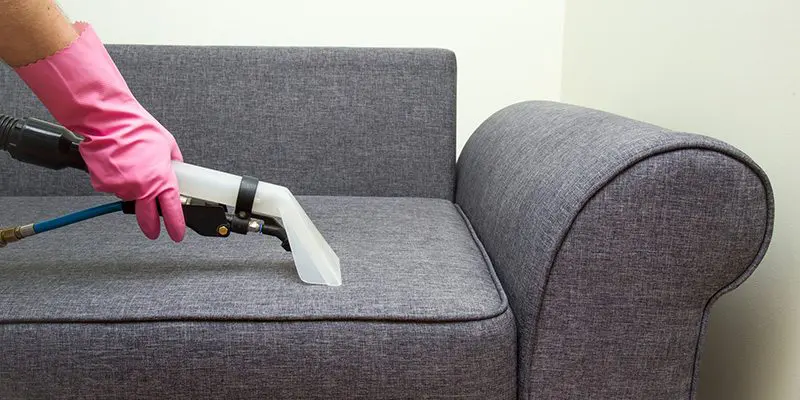
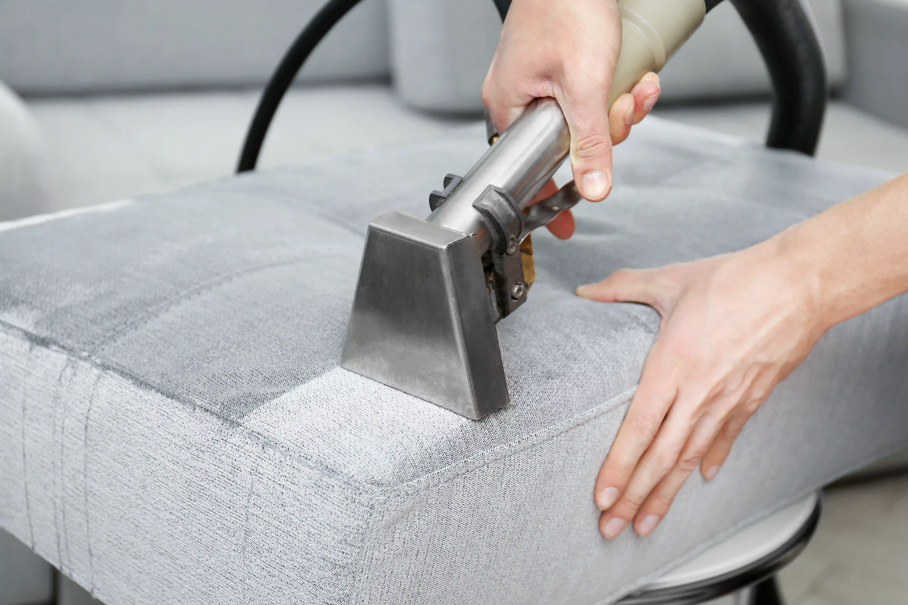

Profesyonel Koltuk Yıkama
Koltuklarınızın temizliğini özel ekipmanlar ve anti-alerjik temizlik malzemeleri ile yapıyoruz. Kumaş yapısına zarar vermeden, derinlemesine temizlik sağlıyoruz.
Koltuk Yıkama Sürecimiz
- Ön inceleme ve leke tespiti
- Vakumlama işlemi
- Özel şampuan uygulaması
- Leke çıkarma işlemi
- Derinlemesine yıkama
- Durulama
- Kurutma işlemi
Neden Profesyonel Koltuk Yıkama?
- Derinlemesine temizlik
- Koku giderme
- Anti-bakteriyel temizlik
- Leke çıkarma garantisi
- Kumaş koruma
- Uzun ömürlü temizlik


Koltuklarınız İçin Profesyonel Çözüm
Koltuklarınızın bakımı için hemen randevu alın!
Randevu Al